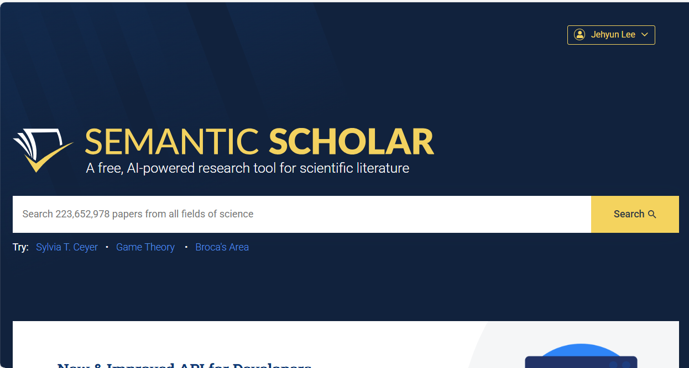
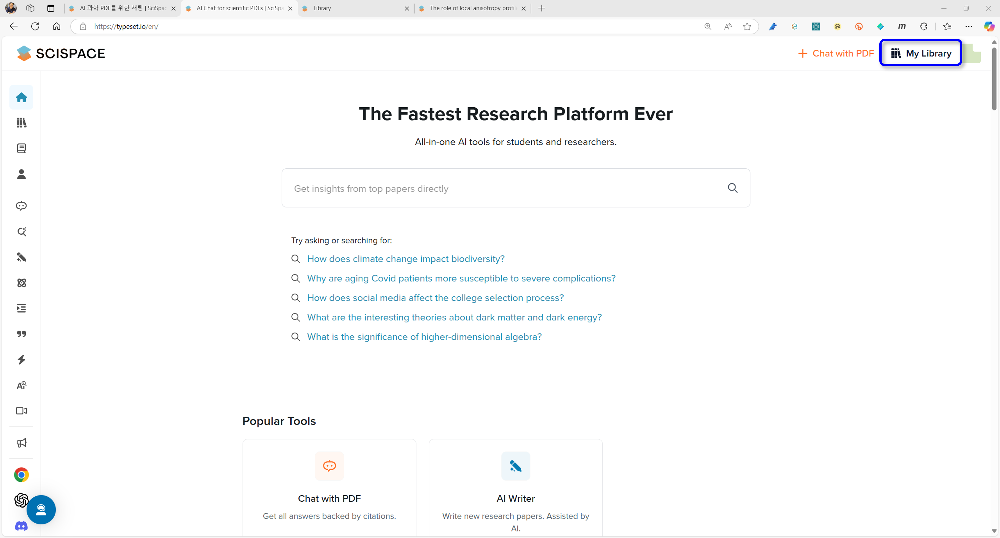
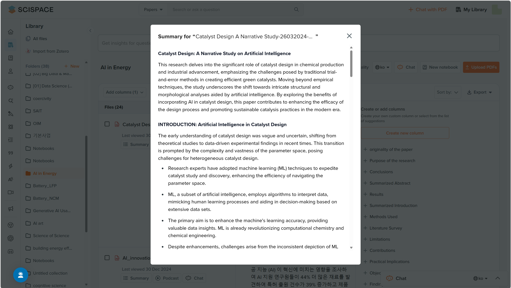
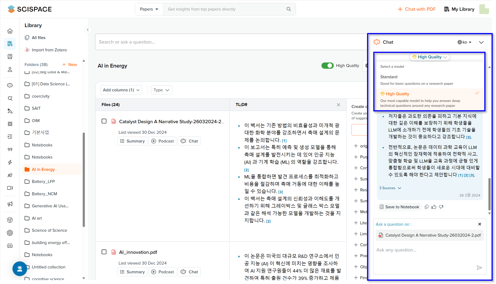
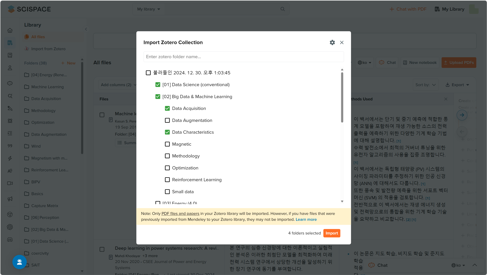
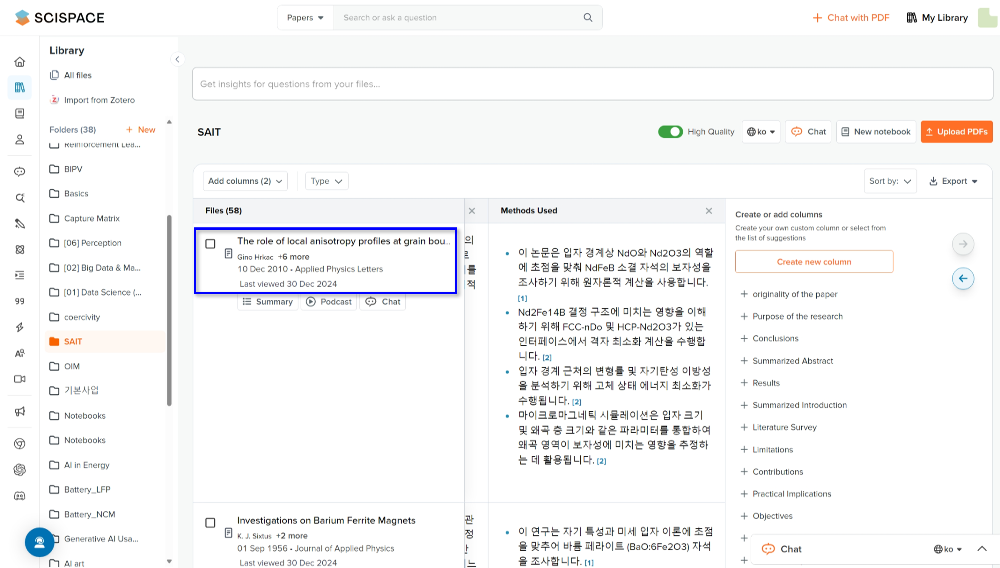
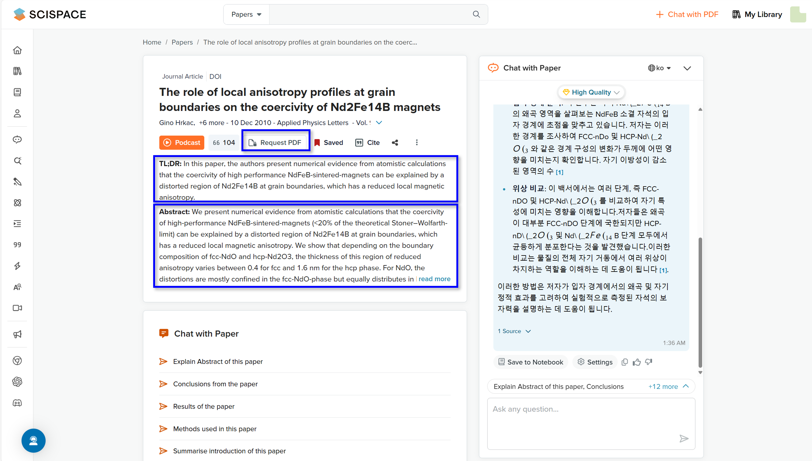
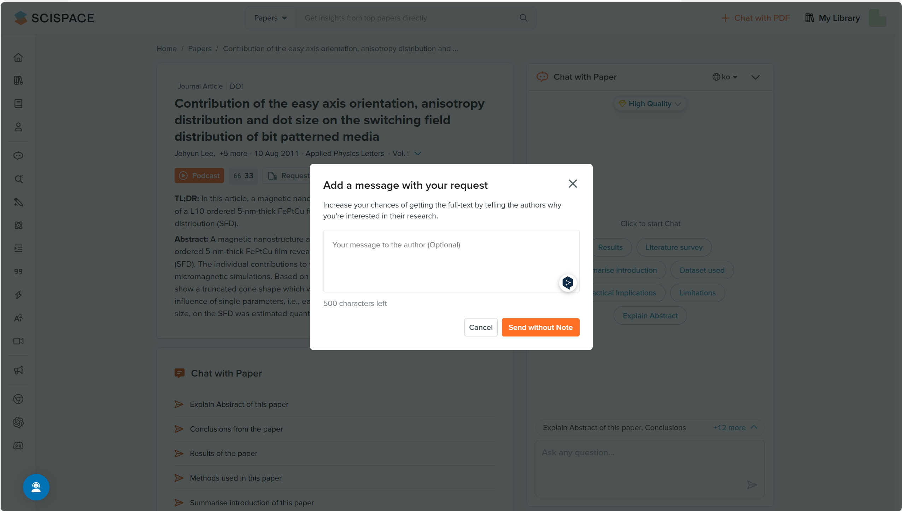

- SciSpace 네 번째 글입니다. PDF 파일들을 정리할 수 있는 My Library입니다.
- 믿을만한 문서들을 올려두고 활용할 수 있습니다.
- Zotero, Mendeley를 사용하시던 분들이라면 SciSpace로 옮겨올 수 있습니다.
4. My Library
4.1. 문서 업로드, 관리
Pega Devlog: 생성 AI 연구 활용 한계와 제언
Nature: Artificial-intelligence institute launches free science search engine
Semantic Scholar: A free, AI-powered research tool for scientific literature
Zotero
- SciSpace를 비롯한 정보 수집, 정리용 AI 도구들의 가장 치명적인 약점은 Data Source입니다.
- 반년 전 관련 글을 올린 적도 있지만 여전히 유효합니다.
- 이런 도구들은 Semantic Scholar: A free, AI-powered research tool for scientific literature에서 논문을 찾습니다.

- Semantic Scholar가 좋은 검색 엔진이기는 하지만, 분야에 따라서는 답답합니다.
- 찾는 논문, 좋은 논문. 정확히는 유료 논문이 나오지 않기 때문입니다.
- 문제는 AI가 논문을 찾아 내용을 정리해서 주다 보면 왠지 더 믿게 되고, 여기서 보이지 않는 것은 없다고 은연중에 생각하게 됩니다.
- 이를 해결할 수 있는 유일한 방법은 논문을 직접 찾아 PDF 파일을 업로드하는 것입니다.
- ChatGPT에도 이런 식으로 논문을 올리고 활용할 수 있는데, 문제는 파일 관리를 PC 등에 별도로 해야 한다는 점입니다.
- SciSpace는 문서를 올리고, 폴더를 만들어 관리할 수 있도록 My Library를 제공합니다.

- 우측 상단의 My Library 버튼을 누르면, 또는 좌측 세로줄 메뉴에서 책꽂이 아이콘을 클릭하면
- 저의 경우 아래와 같은 장면이 펼쳐집니다.
- 먼저, 좌측에 엄청나게 많은 폴더들이 있습니다. 제가 논문을 받을 때마다 만든 것들과 함께,
- 한때 사용하던 Zotero에 저장된 서지정보를 받아온 것들입니다.

이 중 주황색으로 표현된 AI in Energy폴더를 클릭한 것이 주 화면에 나온 것입니다.
폴더에 속한 논문들이 주요 내용과 함께 표로 정리되어 출력됩니다.
표의 우측 상단에서 언어를 설정할 수 있습니다. 기본값은 영어이지만 한글을 사용할 수 있습니다.
현재 한글로 설정되어 있기 때문에 아래의
TL;DR이 우리말로 출력되고 있습니다.Files에는 파일명이 있습니다. 24개의 파일명 아래에 세 가지 기능이 보이는데,summary,Podcast,Chat입니다.summary를 누르면TL;DR보다 훨씬 자세한 요약이 출력되지만 영어로만 고정되어 있습니다.언어 설정을 할 수 없다는 점이 아쉽기는 하지만
TL;DR에 비해 훨씬 자세한 내용을 담고 있습니다.

Chat을 누르면 오른쪽에 플로팅 창이 뜨면서, 이 논문에 대해 질문을 하고 답을 받을 수 있습니다.- ChatGPT에 논문을 업로드해 둔 것과 같은 상황인데, 사용을 권장하지는 않습니다.
- 질문을 하면 빠르게 답변을 하고 본문 중 답을 가져온 지점을 레퍼런스로 표시해주는 것 까지는 좋은데,
- 레퍼런스를 클릭하면
Chat with PDF모드로 갑니다. 여기까지도 좋습니다.
- 제가 권장하지 말라고 한 것은, 창이 점프하면서 질문과 답변이 모두 사라지기 때문입니다.
- 단순한 오류이고 곧 고쳐질 것이라 생각하지만, 그리고 새로 열린 창에서 질의와 답변을 받을 수 있지만
- 그럴거면 그냥 논문 제목을 클릭해서
Chat with PDF모드로 간 것이 더 편합니다. - 뭔가 아직 정리가 덜 된 느낌이 있습니다.

- 화면 오른쪽에는
+로 시작하는 항목이 많이 있습니다. - 여기를 클릭하면 표에 항목이 새로 붙으면서 각 논문마다 해당 데이터를 일괄 추출해 냅니다.
- 관심이 사라진 주제는
x를 눌러 닫을 수도 있고, - 일괄 적용하고자 하는 질문이 없을 경우
Create new column을 눌러 새로운 열을 만들 수 있습니다. - 그리고 우측 상단
Export버튼을 눌러 표를 엑셀 등 형식으로 다운로드할 수 있습니다.

- 라이브러리 관리 방법은 생각보다 간단합니다.
- 왼쪽 폴더 목록 위에 있는
+New버튼을 눌러 폴더를 만들 수 있고, - 오른쪽 위
Upload PDFs버튼을 눌러 파일을 업로드할 수 있습니다.
4.2. 가져오기
- SciSpace는 Zotero의 목록을 가져올 수 있습니다.
- 화면 왼쪽 위
Import from Zotero버튼을 누르면 Zotero 계정과 연결하는 화면이 나오는데, - Zotero 아이디와 패스워드를 입력하여 연결하면 다음과 같이 어떤 폴더를 가져올지 선택할 수 있습니다.
- 가져올 폴더를 선택한 뒤
Import버튼을 누르면 폴더가 생성되고, 그 안에 논문들이 추가됩니다.

- PDF 파일만 가져올 수 있다는 이야기가 하단에 깨알같이 적혀있는데,
- 여기에 덧붙여 Mendeley에서 Zotero로 가져온게 있다면 이건 안가져올거야라고도 합니다.
- 사실과 다릅니다.
- PDF 파일이 없는 서지정보도 가져오며
- Mendeley에서 가져온 논문들도 가져옵니다.
- 그 바람에 서지정보를 입력하는 기능은 없는데 가져올 수는 있는 기형적인 구조가 됩니다.
- 기능이 추가되었으나 안내 문구가 수정되지 않은 것으로 짐작합니다.
- 희한한 것은 서지정보만으로도 뭔가 데이터를 끄집어 낸다는 것인데,
Summary,Podcast버튼은 동작하지 않지만Chat은 오동작을 합니다.- 무슨 말이냐면, 지시한 논문의 내용이 아닌 아무말이나 지어낸다는 뜻입니다.

- 다행히 논문 제목을 클릭해서
Chat with PDF모드로 가면 써먹을만 합니다. - 서지정보를 이용해 Semantic Scholar와 연결하는 것으로 보이는데,
- 초록과 TL;DR, 그리고 피인용수까지 가지고 있는 것을 확인할 수 있기 때문입니다.

- Request PDF버튼을 통해 저자에게 메일을 보낼 수 있는데,
- 제가 교신저자로 등록돤 메일을 눌러보았지만, 확인해보니 정작 너무 예전 메일주소라 제가 확인할 수 없었습니다.
- 기능이야 어쨌든 다소 무례한 것이 아닌가 싶은 생각이 듭니다.

4.3. 맺음말
- 논문을 정리하는 사람 치고 적은 양을 정리하는 사람은 없습니다.
- 대학원에 입학한지 얼마 되지 않아 애초에 가진 것이 적은 경우를 제외하고는,
- 상당히 많은 논문 + 많아질 논문들을 관리하는 것이 숙명에 가깝습니다.
- 그런 면에서 폴더를 만들어 정리할 수 있는 이 기능은 상당히 매력적입니다.
- 그러나 한편으로 폴더 정렬이 되지 않는다는 점은 매우 아쉽습니다.
- 설명과 달리 서지정보를 가져온다는 점에서
- Zotero, Mendeley 같은 서지 관리 프로그램을 노리는 건 아닌가 싶기도 합니다.
- 사실 전통의 강자 EndNote를 포함해 이런 프로그램들이 여럿 있고,
- 이들도 AI 기능을 달려면 얼마든지 달 수 있습니다. SciSpace보다 더 유리한 고지를 점한 곳도 많습니다.
- 더 좋은 도구들이 나오면 언제든 활용할 수 있다는 열린 마음으로 기다리는 자세가 필요할 듯 합니다.